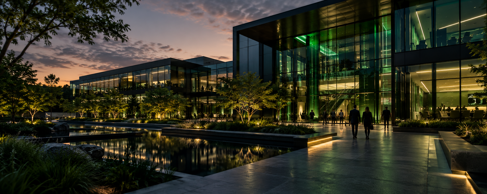
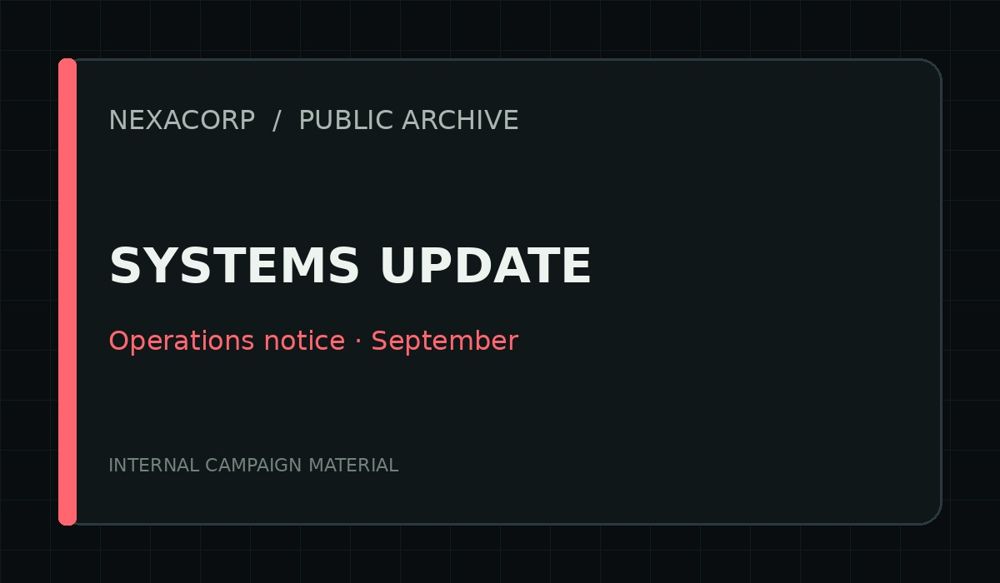

Infrastructure that lasts
Cloud & infrastructure
From workload planning to recovery readiness, we design and maintain the systems your teams rely on.
Platform architecture · Managed operations · Recovery planning
Enterprise technology. Human ambition.
We bring infrastructure, data, and research together to help organisations build a more dependable digital future.

01 / Our company
Great technology works because people understand the whole picture. That is how we approach every partnership.
Founded in Colombo in 2014, NexaCorp is an independent technology company working at the intersection of enterprise infrastructure, data systems, and applied research.
We help organisations modernise essential services without losing sight of the people who depend on them. Our specialists work together from discovery and architecture through implementation, ongoing operations, and improvement.
Across our Colombo and Kandy teams, we bring a practical engineering mindset: understand the problem, build carefully, measure the outcome, and keep improving.
Meet the people behind the work →02 / What we do
Infrastructure that lasts
From workload planning to recovery readiness, we design and maintain the systems your teams rely on.
Platform architecture · Managed operations · Recovery planning
Information you can trust
We connect fragmented information to build dependable data pipelines, useful reporting, and better decisions.
Data engineering · Reporting platforms · Quality assurance
Ideas with practical impact
We test emerging ideas, prototype promising approaches, and turn evidence into software that solves real problems.
Applied research · Product development · Integration
03 / How we work
We choose maintainable systems and clear documentation over shortcuts that become tomorrow’s problems.
Reliability, responsible information handling, and operational readiness belong in the design from day one.
We bring disciplines together, challenge assumptions respectfully, and leave teams stronger than we found them.
04 / From the newsroom

18 September 2026 / Operations
Our September infrastructure refresh brings a closer look at the team keeping everyday services running.
Read the update →
16 September 2026 / Research
A look at our applied research programme and the evidence guiding the next generation of services.
Read the update →Let’s build what comes next
Tell us about your infrastructure, data, or engineering challenge.
Our team will help you explore the right next step.
Our locations
Corporate operations & engineering
Data systems & applied research
Monday–Friday / 09:00–17:00 SLST